السيارات والأقمشة
A la cultura popular, el cotxe sol associar-se a llibertat, presència i estatus. A
moltes ciutats d'Egipte és habitual trobar-los coberts per protegir-los de la pols i del
desgast quotidià. Cobrir alguna cosa passa de ser una acció quotidiana a un gest
carregat de significat que altera la percepció de l’objecte.
La tela protegeix, però també oculta; preserva, però suspén la identitat d’allò que
cobreix. Sota la tela, l'objecte es manté, encara que la seua presència es torna
incerta. Allò que es tapa no desapareix: es desplaça. Continua ací, però en una altra
condició, menys accessible, més ambigua davant del desgast de l'entorn i del pas del
temps.
En la cultura popular, el coche suele asociarse con libertad, presencia y estatus. En
muchas ciudades de Egipto es habitual encontrarlos cubiertos para protegerlos del polvo
y del desgaste cotidiano. Cubrir algo pasa de ser una acción cotidiana a un gesto
cargado de significado que altera la percepción del objeto.
La tela protege, pero también oculta; preserva, pero suspende la identidad de aquello
que cubre. Bajo la tela, el objeto permanece, aunque su presencia se vuelve incierta. Lo
que se cubre no desaparece: se desplaza. Sigue aquí, pero en otra condición, menos
accesible y más ambigua frente al desgaste del entorno y del paso del tiempo.
In popular culture, the car is often associated with freedom, presence, and status. In
many cities in Egypt, it is common to find them covered to protect them from dust and
everyday wear. Covering something shifts from being a routine action to a gesture
charged with meaning that alters the perception of the object.
The fabric protects, but it also conceals; it preserves, but suspends the identity of
what it covers. Beneath the fabric, the object remains, although its presence becomes
uncertain. What is covered does not disappear: it is displaced. It remains here, but in
another condition—less accessible and more ambiguous in the face of environmental wear
and the passage of time.
Projecte personal
Desembre 2022 - Egipte
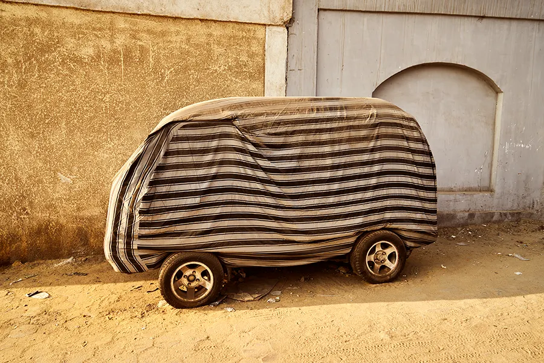
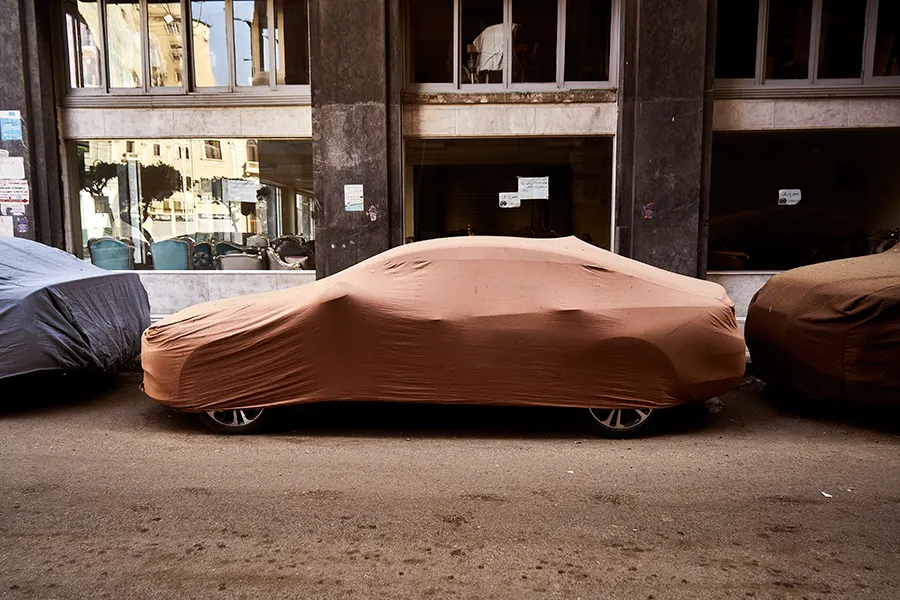
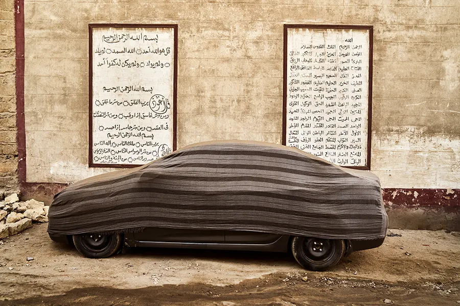
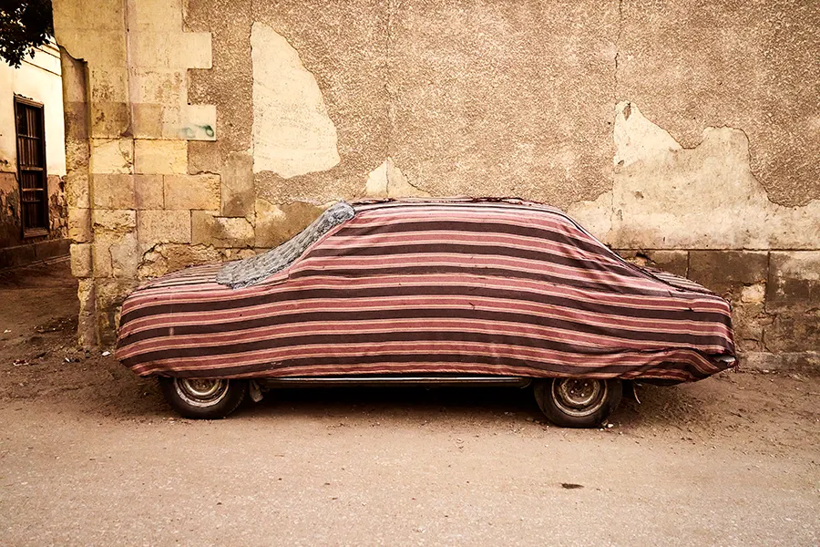
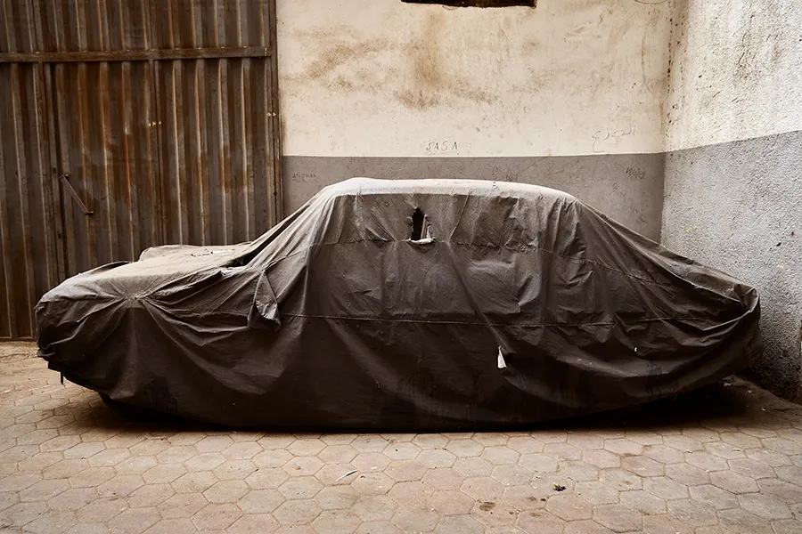
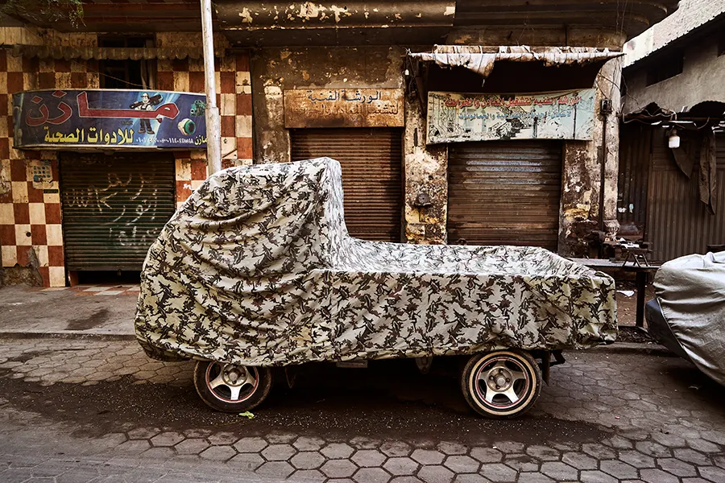
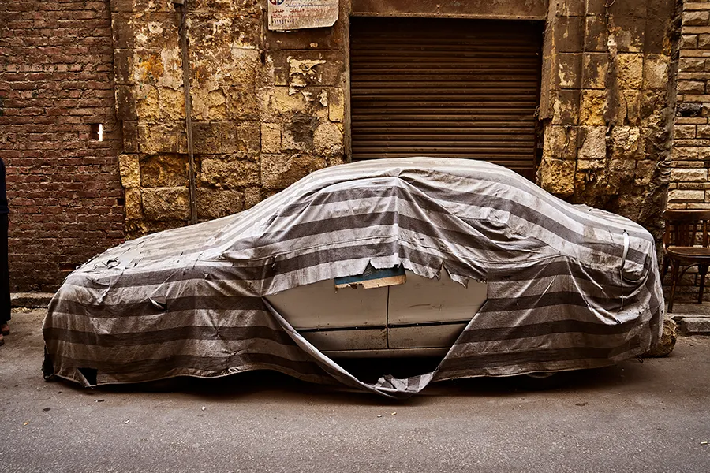
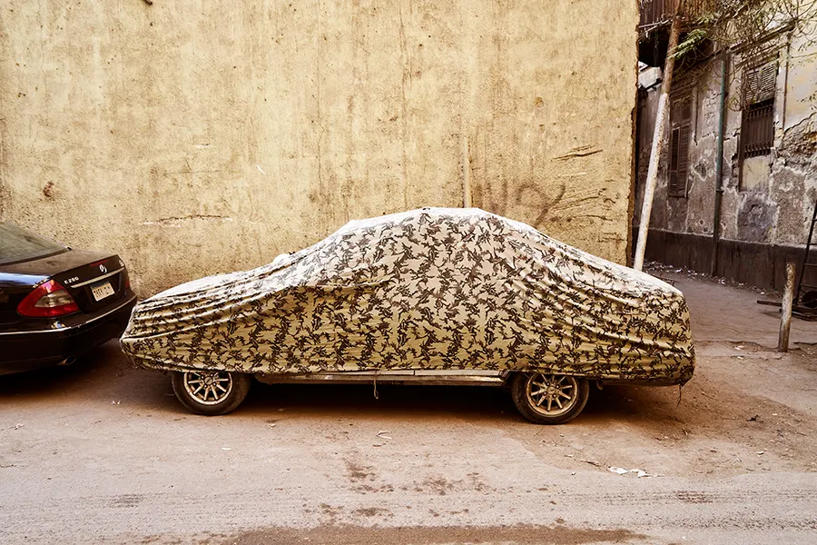
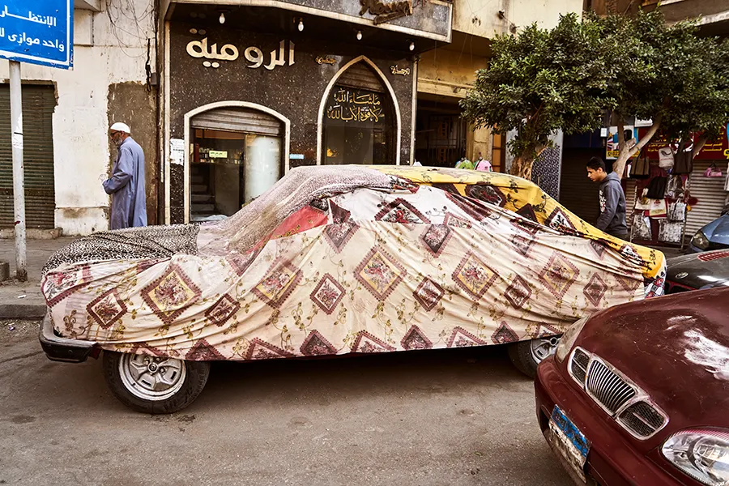
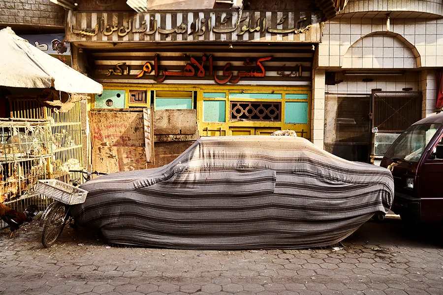
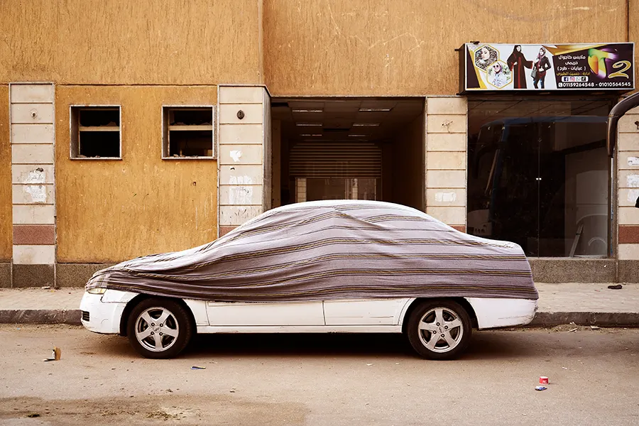
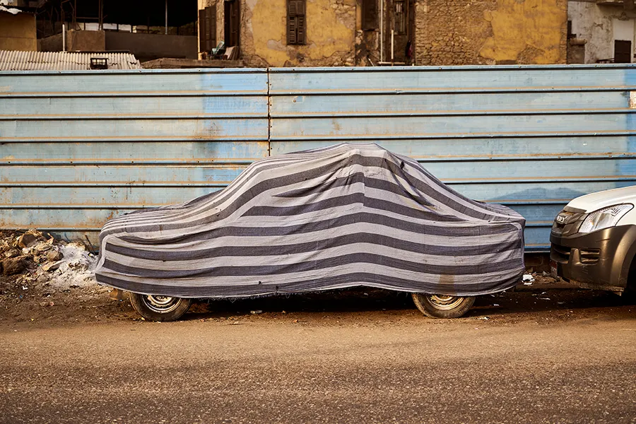
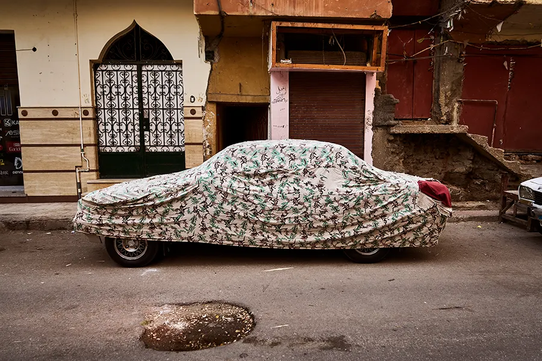
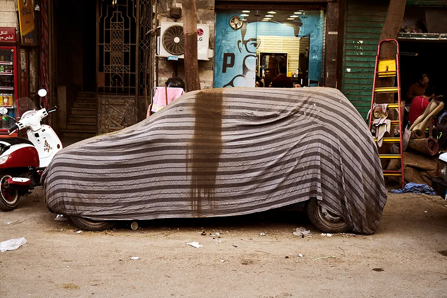
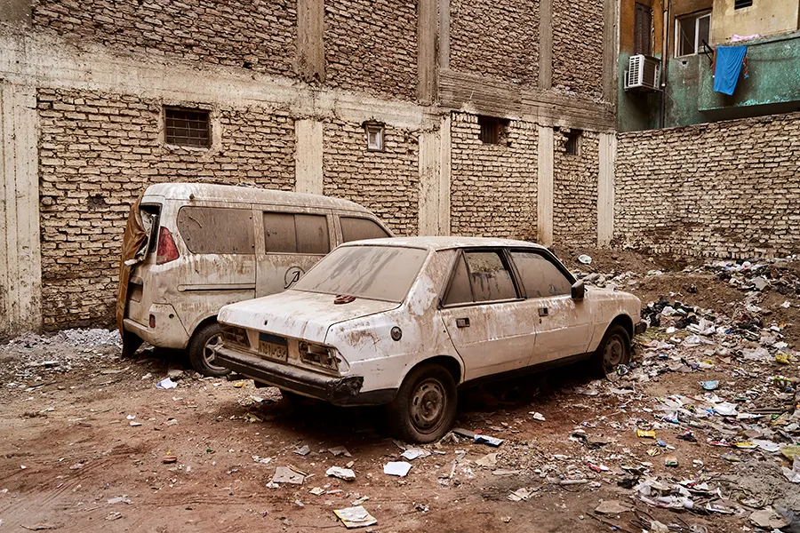
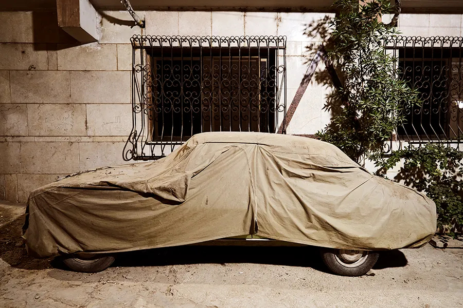
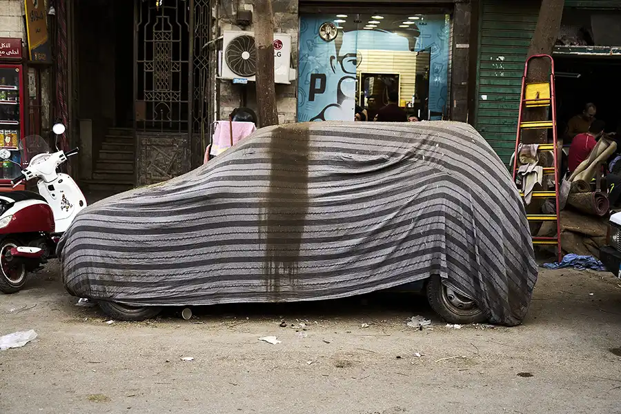
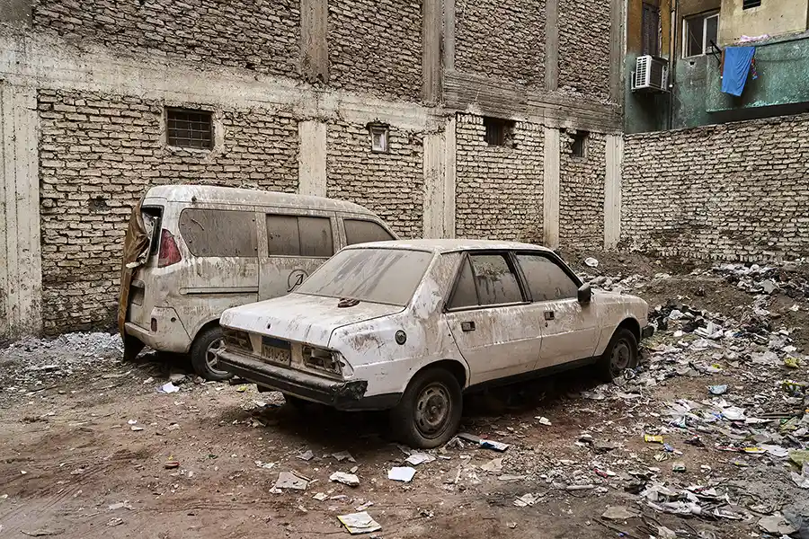